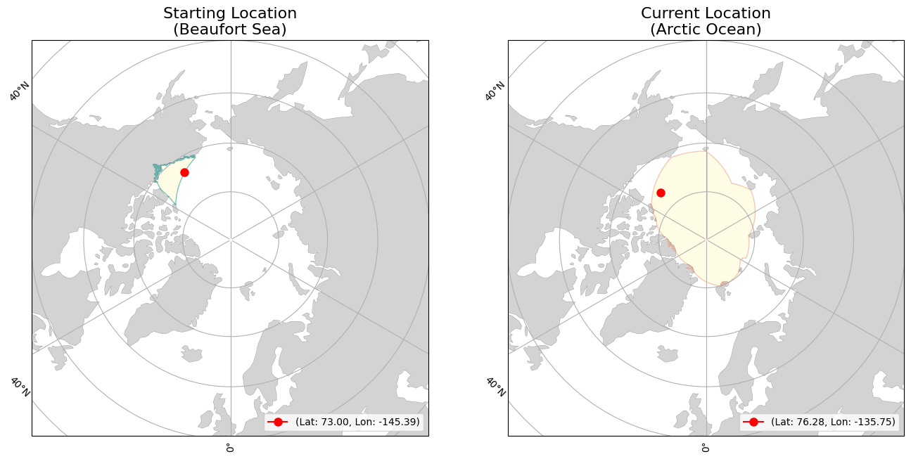

<div><div><b>Buoy Starting and Current Locations</b></div></div>
<div><div><b>Buoy Movement over Time</b></div></div>
<iframe src="300534064361490_movement.html" width="1000" height="1000" style="border:none;"></iframe>
<div>                        <script type="text/javascript">window.PlotlyConfig = {MathJaxConfig: 'local'};</script>
        <script charset="utf-8" src="https://cdn.plot.ly/plotly-2.35.2.min.js"></script>                <div id="2a6e6cd5-9514-4370-ac01-3cd5e2253a01" class="plotly-graph-div" style="height:600px; width:1000px;"></div>            <script type="text/javascript">                                    window.PLOTLYENV=window.PLOTLYENV || {};                                    if (document.getElementById("2a6e6cd5-9514-4370-ac01-3cd5e2253a01")) {                    Plotly.newPlot(                        "2a6e6cd5-9514-4370-ac01-3cd5e2253a01",                        [{"hovertemplate":"Date=%{x}\u003cbr\u003etotal_distance_km=%{y}\u003cextra\u003e\u003c\u002fextra\u003e","legendgroup":"","line":{"color":"#636efa","dash":"solid"},"marker":{"symbol":"circle"},"mode":"lines","name":"","orientation":"v","showlegend":false,"x":["2024-02-24","2024-02-25","2024-02-26","2024-02-27","2024-02-28","2024-02-29","2024-03-01","2024-03-02","2024-03-03","2024-03-04","2024-03-05","2024-03-06","2024-03-07","2024-03-08","2024-03-09","2024-03-10","2024-03-11","2024-03-12","2024-03-13","2024-03-14","2024-03-15","2024-03-16","2024-03-17","2024-03-18","2024-03-19","2024-03-20","2024-03-21","2024-03-22","2024-03-23","2024-03-24","2024-03-25","2024-03-26","2024-03-27","2024-03-28","2024-03-29","2024-03-30","2024-03-31","2024-04-01","2024-04-02","2024-04-03","2024-04-04","2024-04-05","2024-04-06","2024-04-07","2024-04-08","2024-04-09","2024-04-10","2024-04-11","2024-04-12","2024-04-13","2024-04-14","2024-04-15","2024-04-16","2024-04-17","2024-04-18","2024-04-19","2024-04-20","2024-04-21","2024-04-22","2024-04-23","2024-04-24","2024-04-25","2024-04-26","2024-04-27","2024-04-28","2024-04-29","2024-04-30","2024-05-01","2024-05-02","2024-05-03","2024-05-04","2024-05-05","2024-05-06","2024-05-07","2024-05-08","2024-05-09","2024-05-10","2024-05-11","2024-05-12","2024-05-13","2024-05-14","2024-05-15","2024-05-16","2024-05-17","2024-05-18","2024-05-19","2024-05-20","2024-05-21","2024-05-22","2024-05-23","2024-05-24","2024-05-25","2024-05-26","2024-05-27","2024-05-28","2024-05-29","2024-05-30","2024-05-31","2024-06-01","2024-06-02","2024-06-03","2024-06-04","2024-06-05","2024-06-06","2024-06-07","2024-06-08","2024-06-09","2024-06-10","2024-06-11","2024-06-12","2024-06-13","2024-06-14","2024-06-15","2024-06-16","2024-06-17","2024-06-18","2024-06-19","2024-06-20","2024-06-21","2024-06-22","2024-06-23","2024-06-24","2024-06-25","2024-06-26","2024-06-27","2024-06-28","2024-06-29","2024-06-30","2024-07-01","2024-07-02","2024-07-03","2024-07-04","2024-07-05","2024-07-06","2024-07-07","2024-07-08","2024-07-09","2024-07-10","2024-07-11","2024-07-12","2024-07-13","2024-07-14","2024-07-15","2024-07-16","2024-07-17","2024-07-18","2024-07-19","2024-07-20","2024-07-21","2024-07-22","2024-07-23","2024-07-24","2024-07-25","2024-07-26","2024-07-27","2024-07-28","2024-07-29","2024-07-30","2024-07-31","2024-08-01","2024-08-02","2024-08-03","2024-08-04","2024-08-05","2024-08-06","2024-08-07","2024-08-08","2024-08-09","2024-08-10","2024-08-11","2024-08-12","2024-08-13","2024-08-14","2024-08-15","2024-08-16","2024-08-17","2024-08-18","2024-08-19","2024-08-20","2024-08-21","2024-08-22","2024-08-23","2024-08-24","2024-08-25","2024-08-26","2024-08-27","2024-08-28","2024-08-29"],"xaxis":"x","y":[1.4795215721332013,0.5125583257871843,1.812663724754104,2.5511251378536026,5.789146116963198,1.8478707376317531,1.1034543301977084,4.330004373565564,1.6232852609556288,7.256218220952027,5.615435669917246,2.2236172096081126,0.6137881934287074,0.06753003139044507,0.016752333647273656,0.20164163224461112,1.2979777700717903,1.0062091223382519,0.09211103878531887,0.43351056002262495,0.12425899999674098,0.3311024794331598,0.8790556239929699,18.72562344380112,17.20246036238282,17.36184101948866,18.91953599384733,12.036475377928612,9.580934788178352,3.4542238026215957,18.399237618927284,17.80354838963578,18.772501140886327,28.78762279687619,19.4604726984081,17.261059727604394,21.455695777819916,12.699114723639475,2.9190165918048976,6.152718609836742,2.741671858194743,4.73035523861872,10.095450101219015,2.383079484829769,7.619797376516338,7.557425231353498,7.275884382023541,16.545124146751167,7.919746255365567,14.8234521403252,22.502924254419273,9.782965377431875,15.009321595754813,5.876513432025955,3.442724348985037,14.538932836409666,11.456187345480009,19.982216309955334,7.149222927602881,1.3011940683250933,4.148296375365752,8.280858749497837,9.986649447817552,7.1789238605689425,5.047314151242837,4.624992094411817,7.725742562879432,7.395784976852341,2.800405914265175,7.349279866279624,9.472416887944513,10.09553713294807,14.50224179303752,16.12872034413314,7.426603460432711,4.8786022437809775,5.580223271451331,7.571280334446037,2.1237930814590906,2.369896332796635,7.469070404167725,8.307444850991327,12.643757690977834,5.736264619618389,1.3100250671049687,10.30138580965322,6.666868210931709,4.638607167681529,7.515704885014146,6.063802630976642,3.354360987887124,3.0093631848456135,10.555579389092447,7.018295618851961,10.525846156357538,3.1975467189844733,7.0721832743921995,7.117758085718032,1.6995636943515784,3.0944730703415106,4.683809884349559,9.80670635807971,11.823721206717435,17.6947607348488,20.21017573207779,14.267030214749532,8.93480182992227,4.766698834382848,6.748519927672303,5.2459507719864735,5.73970718978907,5.180239417829122,5.7425148414607445,9.07808477152267,6.93685963910704,3.9513760176843458,3.071347803668567,3.653965105331296,5.149301140347024,6.388685886203833,3.8663231698698395,3.0484754813626136,2.5122436774768846,9.991406288893616,7.556953813614925,0.34330031319434506,8.479615507198856,10.032413023472055,3.5161427088594754,13.738816465334427,10.735225208189595,7.062666520728579,2.100383320897459,11.67931353954824,3.4364800264326463,8.99404150547395,15.924712419324413,1.8839473155896664,4.4435708830183485,12.658044638593644,4.644595388394781,1.7200791283694283,3.831896991657046,13.270717669898293,30.0038606566472,12.440663283881815,21.102478225577137,19.831158184482714,16.339956049718946,15.860597815690088,19.404311210820318,8.753049133392029,6.1595792717679085,12.027621849368574,9.62909828899794,11.325727135457981,7.223885909326284,14.122199459010872,14.345404036748768,16.975242529287176,32.389722964778564,25.20288766744855,11.53591592589348,12.223475930602023,14.294836798507143,5.0245056755201265,12.032459373074925,10.648100176801698,6.295077060326529,12.03920445751753,10.37571515722978,11.04747978149607,13.611666602627626,21.174755177072488,23.98961495750875,8.224300253999868,29.22220979275398,1.2670869334719275,17.04624512575749,24.81665503380956,15.246554734892703,15.643622246816877,20.45509676127252,27.40839773885019,24.120843390291473,8.259642653034659,11.257487953179433,7.97204700735082],"yaxis":"y","type":"scatter"}],                        {"template":{"data":{"histogram2dcontour":[{"type":"histogram2dcontour","colorbar":{"outlinewidth":0,"ticks":""},"colorscale":[[0.0,"#0d0887"],[0.1111111111111111,"#46039f"],[0.2222222222222222,"#7201a8"],[0.3333333333333333,"#9c179e"],[0.4444444444444444,"#bd3786"],[0.5555555555555556,"#d8576b"],[0.6666666666666666,"#ed7953"],[0.7777777777777778,"#fb9f3a"],[0.8888888888888888,"#fdca26"],[1.0,"#f0f921"]]}],"choropleth":[{"type":"choropleth","colorbar":{"outlinewidth":0,"ticks":""}}],"histogram2d":[{"type":"histogram2d","colorbar":{"outlinewidth":0,"ticks":""},"colorscale":[[0.0,"#0d0887"],[0.1111111111111111,"#46039f"],[0.2222222222222222,"#7201a8"],[0.3333333333333333,"#9c179e"],[0.4444444444444444,"#bd3786"],[0.5555555555555556,"#d8576b"],[0.6666666666666666,"#ed7953"],[0.7777777777777778,"#fb9f3a"],[0.8888888888888888,"#fdca26"],[1.0,"#f0f921"]]}],"heatmap":[{"type":"heatmap","colorbar":{"outlinewidth":0,"ticks":""},"colorscale":[[0.0,"#0d0887"],[0.1111111111111111,"#46039f"],[0.2222222222222222,"#7201a8"],[0.3333333333333333,"#9c179e"],[0.4444444444444444,"#bd3786"],[0.5555555555555556,"#d8576b"],[0.6666666666666666,"#ed7953"],[0.7777777777777778,"#fb9f3a"],[0.8888888888888888,"#fdca26"],[1.0,"#f0f921"]]}],"heatmapgl":[{"type":"heatmapgl","colorbar":{"outlinewidth":0,"ticks":""},"colorscale":[[0.0,"#0d0887"],[0.1111111111111111,"#46039f"],[0.2222222222222222,"#7201a8"],[0.3333333333333333,"#9c179e"],[0.4444444444444444,"#bd3786"],[0.5555555555555556,"#d8576b"],[0.6666666666666666,"#ed7953"],[0.7777777777777778,"#fb9f3a"],[0.8888888888888888,"#fdca26"],[1.0,"#f0f921"]]}],"contourcarpet":[{"type":"contourcarpet","colorbar":{"outlinewidth":0,"ticks":""}}],"contour":[{"type":"contour","colorbar":{"outlinewidth":0,"ticks":""},"colorscale":[[0.0,"#0d0887"],[0.1111111111111111,"#46039f"],[0.2222222222222222,"#7201a8"],[0.3333333333333333,"#9c179e"],[0.4444444444444444,"#bd3786"],[0.5555555555555556,"#d8576b"],[0.6666666666666666,"#ed7953"],[0.7777777777777778,"#fb9f3a"],[0.8888888888888888,"#fdca26"],[1.0,"#f0f921"]]}],"surface":[{"type":"surface","colorbar":{"outlinewidth":0,"ticks":""},"colorscale":[[0.0,"#0d0887"],[0.1111111111111111,"#46039f"],[0.2222222222222222,"#7201a8"],[0.3333333333333333,"#9c179e"],[0.4444444444444444,"#bd3786"],[0.5555555555555556,"#d8576b"],[0.6666666666666666,"#ed7953"],[0.7777777777777778,"#fb9f3a"],[0.8888888888888888,"#fdca26"],[1.0,"#f0f921"]]}],"mesh3d":[{"type":"mesh3d","colorbar":{"outlinewidth":0,"ticks":""}}],"scatter":[{"fillpattern":{"fillmode":"overlay","size":10,"solidity":0.2},"type":"scatter"}],"parcoords":[{"type":"parcoords","line":{"colorbar":{"outlinewidth":0,"ticks":""}}}],"scatterpolargl":[{"type":"scatterpolargl","marker":{"colorbar":{"outlinewidth":0,"ticks":""}}}],"bar":[{"error_x":{"color":"#2a3f5f"},"error_y":{"color":"#2a3f5f"},"marker":{"line":{"color":"#E5ECF6","width":0.5},"pattern":{"fillmode":"overlay","size":10,"solidity":0.2}},"type":"bar"}],"scattergeo":[{"type":"scattergeo","marker":{"colorbar":{"outlinewidth":0,"ticks":""}}}],"scatterpolar":[{"type":"scatterpolar","marker":{"colorbar":{"outlinewidth":0,"ticks":""}}}],"histogram":[{"marker":{"pattern":{"fillmode":"overlay","size":10,"solidity":0.2}},"type":"histogram"}],"scattergl":[{"type":"scattergl","marker":{"colorbar":{"outlinewidth":0,"ticks":""}}}],"scatter3d":[{"type":"scatter3d","line":{"colorbar":{"outlinewidth":0,"ticks":""}},"marker":{"colorbar":{"outlinewidth":0,"ticks":""}}}],"scattermapbox":[{"type":"scattermapbox","marker":{"colorbar":{"outlinewidth":0,"ticks":""}}}],"scatterternary":[{"type":"scatterternary","marker":{"colorbar":{"outlinewidth":0,"ticks":""}}}],"scattercarpet":[{"type":"scattercarpet","marker":{"colorbar":{"outlinewidth":0,"ticks":""}}}],"carpet":[{"aaxis":{"endlinecolor":"#2a3f5f","gridcolor":"white","linecolor":"white","minorgridcolor":"white","startlinecolor":"#2a3f5f"},"baxis":{"endlinecolor":"#2a3f5f","gridcolor":"white","linecolor":"white","minorgridcolor":"white","startlinecolor":"#2a3f5f"},"type":"carpet"}],"table":[{"cells":{"fill":{"color":"#EBF0F8"},"line":{"color":"white"}},"header":{"fill":{"color":"#C8D4E3"},"line":{"color":"white"}},"type":"table"}],"barpolar":[{"marker":{"line":{"color":"#E5ECF6","width":0.5},"pattern":{"fillmode":"overlay","size":10,"solidity":0.2}},"type":"barpolar"}],"pie":[{"automargin":true,"type":"pie"}]},"layout":{"autotypenumbers":"strict","colorway":["#636efa","#EF553B","#00cc96","#ab63fa","#FFA15A","#19d3f3","#FF6692","#B6E880","#FF97FF","#FECB52"],"font":{"color":"#2a3f5f"},"hovermode":"closest","hoverlabel":{"align":"left"},"paper_bgcolor":"white","plot_bgcolor":"#E5ECF6","polar":{"bgcolor":"#E5ECF6","angularaxis":{"gridcolor":"white","linecolor":"white","ticks":""},"radialaxis":{"gridcolor":"white","linecolor":"white","ticks":""}},"ternary":{"bgcolor":"#E5ECF6","aaxis":{"gridcolor":"white","linecolor":"white","ticks":""},"baxis":{"gridcolor":"white","linecolor":"white","ticks":""},"caxis":{"gridcolor":"white","linecolor":"white","ticks":""}},"coloraxis":{"colorbar":{"outlinewidth":0,"ticks":""}},"colorscale":{"sequential":[[0.0,"#0d0887"],[0.1111111111111111,"#46039f"],[0.2222222222222222,"#7201a8"],[0.3333333333333333,"#9c179e"],[0.4444444444444444,"#bd3786"],[0.5555555555555556,"#d8576b"],[0.6666666666666666,"#ed7953"],[0.7777777777777778,"#fb9f3a"],[0.8888888888888888,"#fdca26"],[1.0,"#f0f921"]],"sequentialminus":[[0.0,"#0d0887"],[0.1111111111111111,"#46039f"],[0.2222222222222222,"#7201a8"],[0.3333333333333333,"#9c179e"],[0.4444444444444444,"#bd3786"],[0.5555555555555556,"#d8576b"],[0.6666666666666666,"#ed7953"],[0.7777777777777778,"#fb9f3a"],[0.8888888888888888,"#fdca26"],[1.0,"#f0f921"]],"diverging":[[0,"#8e0152"],[0.1,"#c51b7d"],[0.2,"#de77ae"],[0.3,"#f1b6da"],[0.4,"#fde0ef"],[0.5,"#f7f7f7"],[0.6,"#e6f5d0"],[0.7,"#b8e186"],[0.8,"#7fbc41"],[0.9,"#4d9221"],[1,"#276419"]]},"xaxis":{"gridcolor":"white","linecolor":"white","ticks":"","title":{"standoff":15},"zerolinecolor":"white","automargin":true,"zerolinewidth":2},"yaxis":{"gridcolor":"white","linecolor":"white","ticks":"","title":{"standoff":15},"zerolinecolor":"white","automargin":true,"zerolinewidth":2},"scene":{"xaxis":{"backgroundcolor":"#E5ECF6","gridcolor":"white","linecolor":"white","showbackground":true,"ticks":"","zerolinecolor":"white","gridwidth":2},"yaxis":{"backgroundcolor":"#E5ECF6","gridcolor":"white","linecolor":"white","showbackground":true,"ticks":"","zerolinecolor":"white","gridwidth":2},"zaxis":{"backgroundcolor":"#E5ECF6","gridcolor":"white","linecolor":"white","showbackground":true,"ticks":"","zerolinecolor":"white","gridwidth":2}},"shapedefaults":{"line":{"color":"#2a3f5f"}},"annotationdefaults":{"arrowcolor":"#2a3f5f","arrowhead":0,"arrowwidth":1},"geo":{"bgcolor":"white","landcolor":"#E5ECF6","subunitcolor":"white","showland":true,"showlakes":true,"lakecolor":"white"},"title":{"x":0.05},"mapbox":{"style":"light"}}},"xaxis":{"anchor":"y","domain":[0.0,1.0],"title":{"text":"Date"},"tickangle":45},"yaxis":{"anchor":"x","domain":[0.0,1.0],"title":{"text":"total_distance_km"}},"legend":{"tracegroupgap":0},"margin":{"t":60},"title":{"text":"Total Distance Traveled over Time","font":{"size":16},"x":0.5},"height":600,"width":1000},                        {"responsive": true}                    )                };                            </script>        </div>